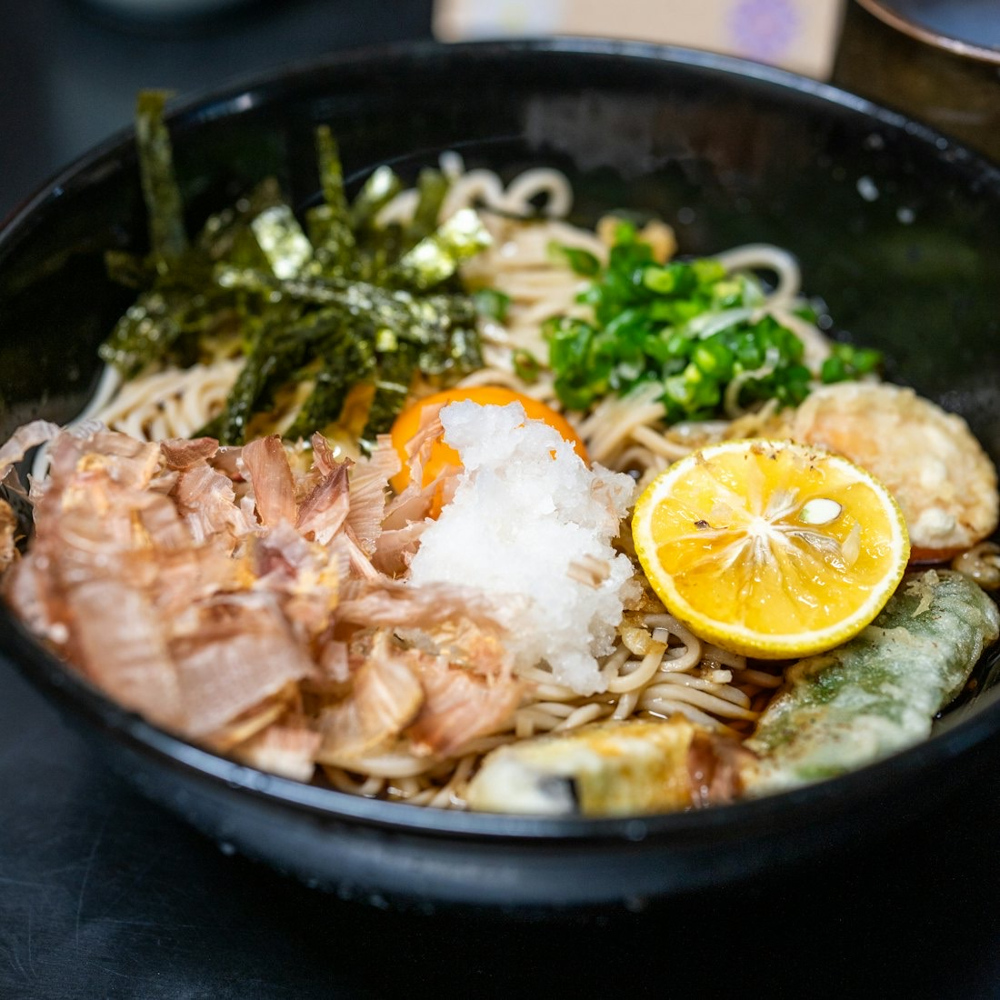
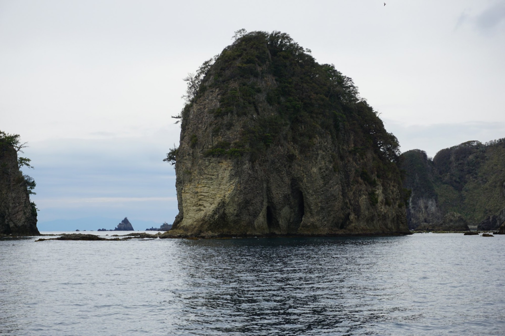
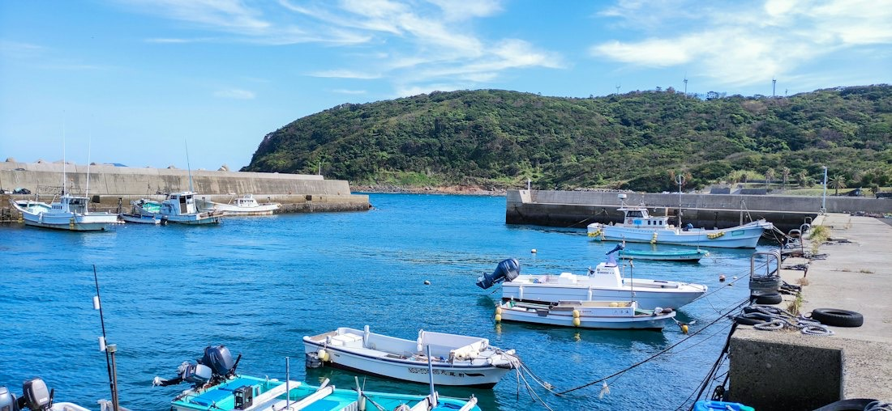
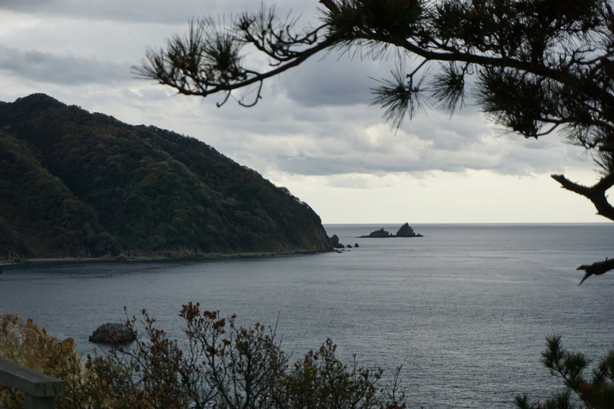

削り節
鰹節、宗田節、サバ節、ムロ節。だしパックも。

削り節・海産物・海苔の専門店 静岡県下田市
伊豆の国下田で、削り節、海産物、海苔の専門店として、創業以来70年にわたり営業しています。
左右にドラッグして、削ってみてください
鰹節
削り節の、いちばんの定番です。
ひと削り 0 回
削り節の3Dイメージです。どの節も、昔から変わらぬ製法で作られたものを使っています
当店の品物は、地場産・国内産にこだわっています。特に削り節は、昔から変わらぬ製法で丁寧に作られた鰹節、宗田節、サバ節、ムロ節を使い、味と風味の豊かさを大切に販売しています。
これからもお客様の安全と安心を第一に考え、信用される品物を販売してまいります。

鰹節、宗田節、サバ節、ムロ節。だしパックも。
店頭で、おいしいだしのとり方もご案内しています。

地のり、わかめ、ひじき、桜えびなど、伊豆の海の幸。

…
| 営業時間 | 8:00〜19:30 |
|---|---|
| 定休日 | 毎週水曜日（8月・12月は無休） |
ご注文、ご意見、ご質問などは、お気軽にメールをください。